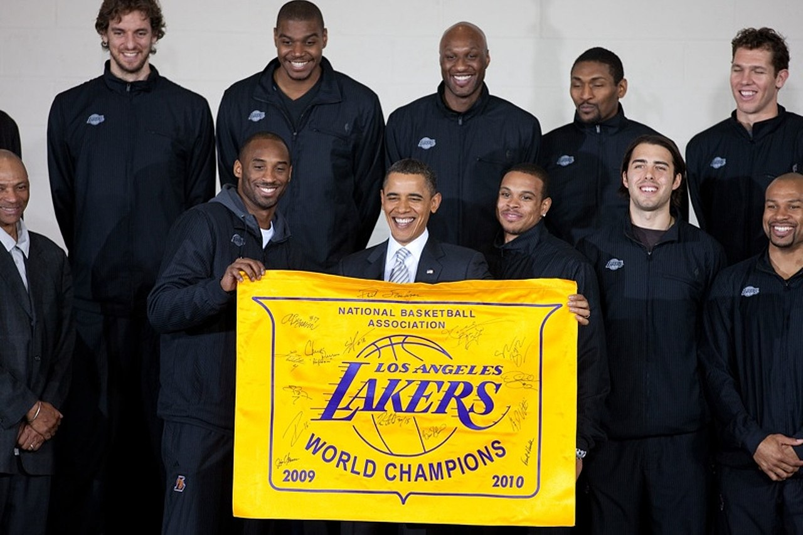
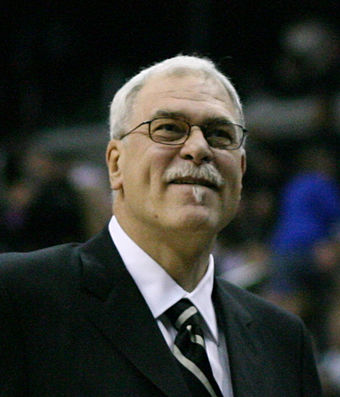

Brief Introduction
The Los Angeles Lakers are an American professional basketball team based in Los Angeles. The Lakers compete in the National Basketball Association (NBA), as a member of the league's Western Conference in the Pacific Division. The Lakers play their home games at Staples Center, an arena shared with the NBA's Los Angeles Clippers, the Los Angeles Sparks of the Women's National Basketball Association, and the Los Angeles Kings of the National Hockey League.The Lakers are one of the most successful teams in the history of the NBA, and have won 16 NBA championships, the second-most behind the Boston Celtics.
Head Coaches
There have been 22 head coaches for the Lakers franchise. John Kundla coached the team in Minneapolis when they won their first five BAA/NBA championships from 1949 to 1954. Pat Riley is second in franchise history in both regular season and playoff games coached and wins.Phil Jackson broke Riley's regular season wins record in 2009, and he passed Riley's playoff wins and games coached records in 2010. Jackson, Riley, Kundla, and Bill Sharman have all been inducted into the Basketball Hall of Fame for their coaching careers. George Mikan, Jim Pollard, Jerry West, Pat Riley, Magic Johnson, Kurt Rambis, Byron Scott and Luke Walton have all played and head coached for the Lakers. Jackson, who had two stints as head coach, was coach from 2005 to 2011. In May 2011, Mike Brown was named his replacement for the 2011–12 season.Brown was fired on November 9, 2012, after a 1–4 start. Assistant coach Bernie Bickerstaff served as interim head coach for five games before the Lakers selected Mike D'Antoni as their new head coach. D'Antoni resigned at the end of the 2013–14 season. In July 2014, Byron Scott was hired as head coach. After the 2015–16 season ended, Scott was fired. On April 29, 2016, former Lakers player Luke Walton was named as Scott's replacement, and served as head coach until the end of the 2018–19 season. Frank Vogel was named his successor on a multiyear deal announced on May 13, 2019.